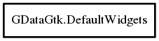

DefaultWidgets
Object Hierarchy:

Description:
public class DefaultWidgets
Registration container for methods that can be used to automate gui creation per object properties or per data types
Application it self should more or less always use get_default() unless there is a need for specific conditional chaining in which case
it can create new instance and set that one as fallback
This allows impacting creation at any level
Libraries should most probably generate following structure - its own registry instance - that has fallback in get_default(). With this
setup library can set up as many custom creations as wanted and never impact the application, while at the same time take advantage of all
custom defaults made by application.
Since:
0.1
Content:
Properties:
- public DefaultWidgets? fallback { set; get; }
Allows chaining of default widget regirars. If requested generation
fails then fallback is the next choice.
- public CreateCustomTypeWidgetDelegate default_fallback { set; get; }
Specifies method which can create fallback widget. By default this
creates simple label widget, but this can be replaced anytime by changing this property
Static methods:
- public static DefaultWidgets get_default ()
Returns singleton instance for DefaultWidgetRegister. Note that
default already registers some defaults. This is easy to override with custom DefaultWidgets class
- public static void set_default (DefaultWidgets instance)
Sets new default widgets creation mechanism. If this is called then
only right moment is before init() or get_instance(). If either of those two was called before this was set application will throw
error and quit
- public static void init ()
Initializes default registrations. Init can be called even if default
instance was swapped with set_default() at which point Init will add default registrations to that specific instance
- public static DefaultWidgets create_custom_instance ()
Creates custom default widget creation registrar
Methods:
- public Widget? create_default_fallback (EditMode mode, ParamSpec? param, out string widget_value_property)
This should be called when resolving correct widget was not possible
- public bool property_widget_registered (EditMode mode, ParamSpec param, bool go_deep = false)
Checks if specified property registered specific widget creation or
not
- public Widget? create_binding_transfer_widget (EditMode mode, BindingDataTransferInterface? binding_transfer, out string widget_value_property)
Creates widget for specific object property if registered. If not
found and DefaultWidgets instance specifies fallback then that one is used as continuation and so on until the end of the registration
chain. Since this specifies binding transfer data it also means this is safe to call even for foreign objects depending on the fact
that they have registered data handler
- public Widget? create_property_widget (EditMode mode, ParamSpec? param, out string widget_value_property)
Creates widget for specific object property if registered. If not
found and DefaultWidgets instance specifies fallback then that one is used as continuation and so on until the end of the registration
chain
- public bool type_widget_registered (EditMode mode, Type data_type, bool go_deep = false)
Checks if specified data type registered specific widget creation or
not.
- public Widget? create_type_widget (EditMode mode, Type data_type, out string widget_value_property)
Creates widget for specific data type if registered
- public void register_for_property (EditMode mode, ParamSpec? param, CreateCustomWidgetDelegate method)
Registers creation method for specific property in specific object. If
creation already exists GLib.error is reported. If there is the need to specify another method for same thing, then different
instances of DefaultWidgets should be used instead
- public void register_for_data_type (EditMode mode, Type data_type, CreateCustomTypeWidgetDelegate method, ConditionCheckDelegate? condition_check = null)
Registers creation method for specific data type